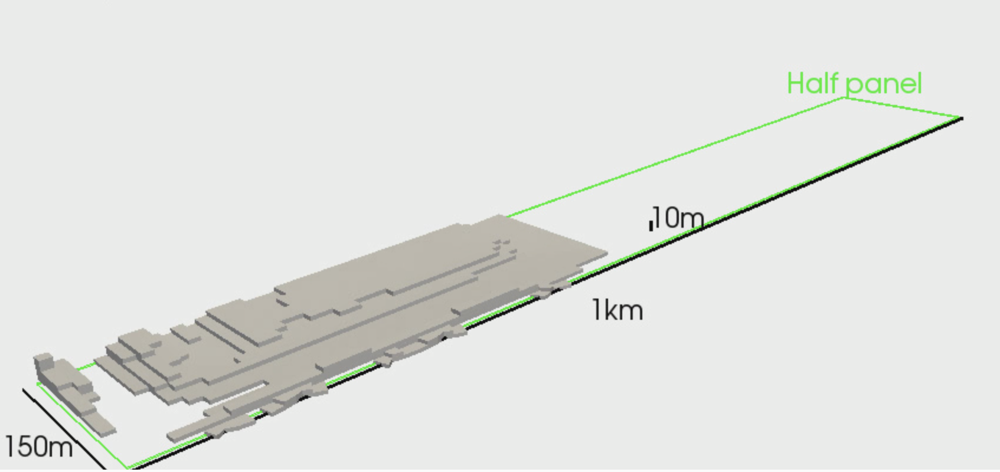
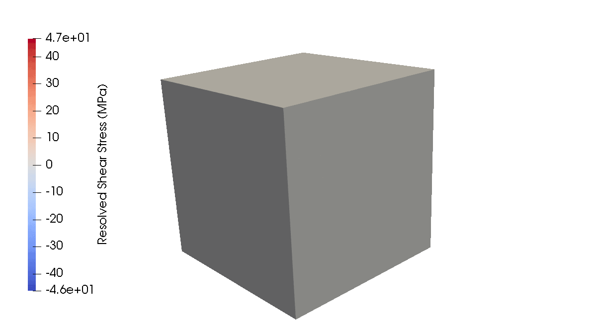
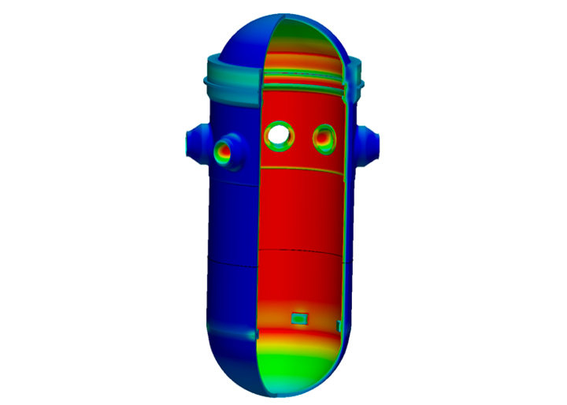

Solid Mechanics Module
The Solid Mechanics module is a library of simulation tools that solve continuum mechanics problems. It provides a simple approach for implementing even advanced mechanics models.
The Solid Mechanics module is used in a variety of pure mechanics simulations and in combined physics simulations with the Heat Transfer, Phase Field, Contact, Porous Flow, and XFEM modules. The following figures show results from a few different simulations performed by solid mechanics module users.

Evolution of rock failure zone in a 300m-wide, 400m-deep panel in a coal mining application.

Evolution of the resolved shear stress on the slip system in a polycrystalline simulation of BCC Iron.

Thermo-mechanical stress analysis of a reactor pressure vessel.
The Solid Mechanics module follows strict software quality guidelines, refer to Solid Mechanics SQA for more information.
Interested in performing some of these simulations yourself? Use the links below to learn more about the solid mechanics module and to get started with your own continuum mechanics and combined physics simulations.
Kinematics and Governing Equations
Set up a mechanics problem with the QuasiStatic Physics, and learn the underlying theory:
Constitutive Models
Select from the available stress models or add your own:
Advanced Features
Specialized capabilities for particular problem classes:
Examples and Tutorials
Get started with introductory tutorials and examples: